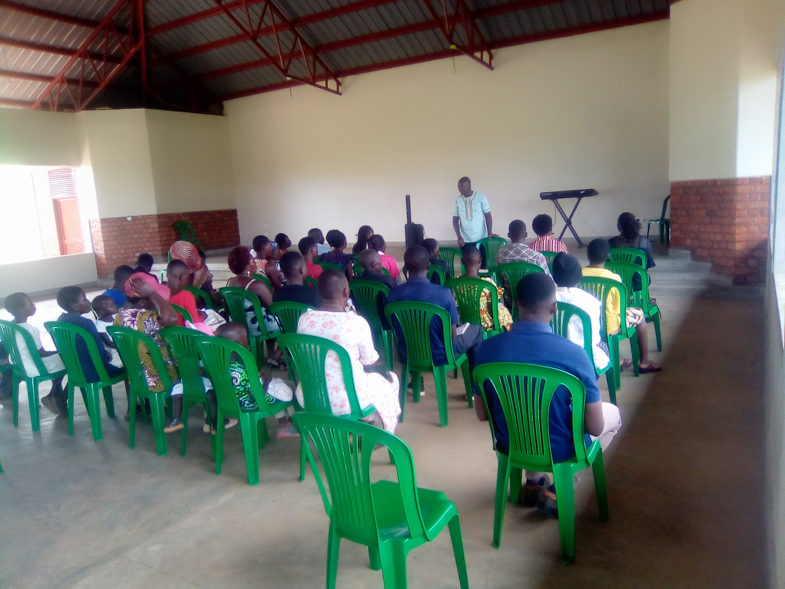
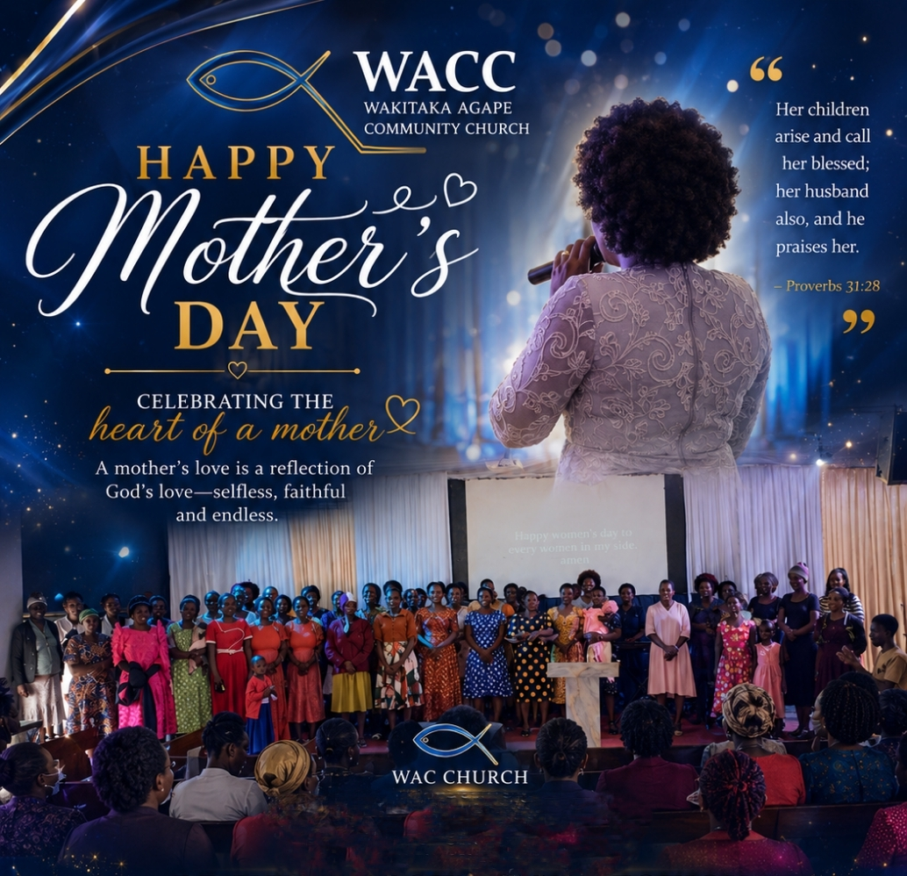

Church service
A recorded moment from a church service.
A visual record of activities happening within the Agape Community Church family, including Wakitaka and Buyizi.





A recorded moment from a church service.
A joyful worship moment from the church archive.